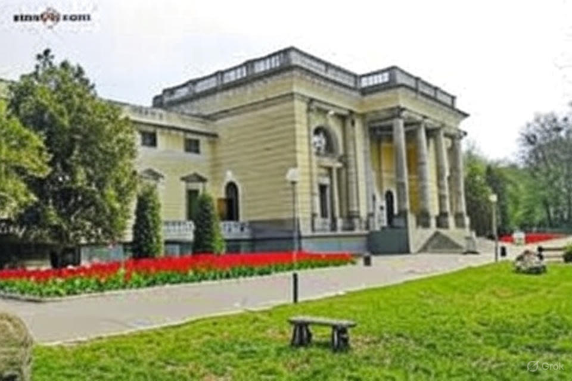
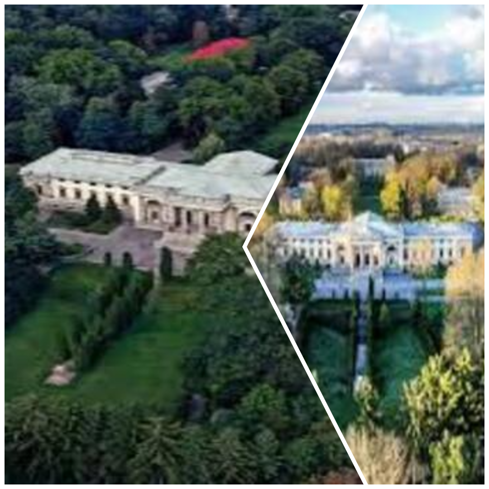

Моменти, закарбовані в часі
Погляньте на палац з різних ракурсів. Тут зібрані фотографії екстер'єру, паркових алей та збережених елементів інтер'єру. Кожен знімок – це спроба зупинити час і передати неповторну атмосферу цього місця.

